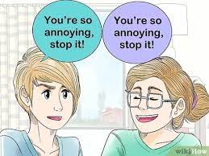
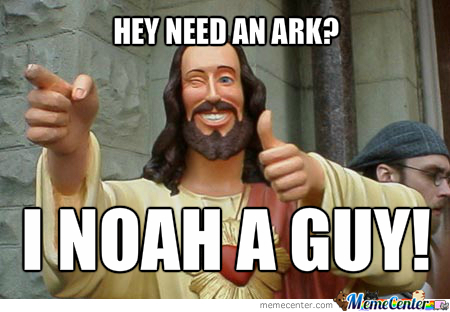
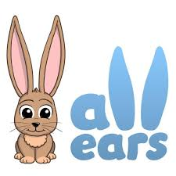

My Life History
Recently I can now confidently say I am an alumni of my alma mater The Meru School. As we loved to joke about, it is the only public school in the country that begins with a definit article. (Beat that Alliance..hahaha)
Found in the miraa chewing county of Meru where the common greeting for a newbie is Baite Murumwe,
it is a school that transcends race and religion bringing together teens from every walk of life. My home for the past 5 years (Damn u corona), Meru School has given me the conducive environment to explore my inner idiot. Admission
number 10517 was my licence number, one which I struggled to hide from members of the opposite gender to conceal the fact I was a form one or mono.
Like most millenials of my generation, employment at a young age is often termed as child-labour, hence my lack of any work experience. I find it weird that the system expects so much of ,e, especially the boy child yet it teaches me zilch on
money....BOOHOO.....But guess who wants to deal crypto????? I guess taking pills in Ibiza and eating cake by the ocean will have to wait just a tad bit longer
My programming story is pretty interesting. I have always had a thing for tech. Someetimes I saw myself as the guy who would end up building a robot girlfriend for himself.Luckily I am good with the ladies..oink. So, with the curiosity
of how Google operates and whyy FaceBook is hell-bent on data privacy or why Bill Gates is so damn wealthy, I got to narrow it down to computers. Every click, every drag turned my instincts on. Seeing hackers on the telly made me tingle with
excitement, fuelling my want and passion for the computer abd all functions it executes. I love kidding around but my fsmily better be careful. YOU ARE MY GUINEA PIGS...HOPE YOUR PASSWORDS ARE IN ORDERü§óHere is a link to some of my projects
Me Likey

If it were possible, I would marry cars coz unlike girls, they don't break your heart!! The roaring an engine, the spooling of turbos and the smoking tires (Remember kids, smoke tires not drugs)All the raw monster
energy jammed in mankind's greatest invention; The Automobile,,,All the way from retro Chevvys and Impalasa to modern day Bugattis and Rolls-Royces, cars have come a long way from not only being a convenient
form of transport but also a status symbol with rappers flexing diamond grills and hgh end lamborghinis and Cadillacs. Gimme 10 years and have a look at my garage. A Showroom I tell youüòÜ
Let's be honest; who doesn't love cash? Everyone says the love of money is the root of all evil. Well to hell with that! No wonder such people are poor. On the other hand, i love money. Them Benjamins and Them Jomo Kenyattas keep a smile on my
face each and every day of my life. Imagine a life free of care....come on why go to Mombasa and fight hoards of people to get a slot on a ferry from the colonial era when you can splurge on a top-tier yacht and sail the seven seas like a boss.
Explore the Carribean like Christopher Columbus. Fly on a private jet; breakfast in Nairobi, Lunch in Abu Dhabi and dinner in London. Food for thought.

My frinds have always been a big part of my life. Back in high school, we could always sneak out of class to watch movies in the compiuter lab. We tried every co-curricular activity thinkable before settling for music festival where, with no
idea of who is reading this, things happened. Best to keep things on the low. Fast forward to the KCSE period when all we did was throw books at each other and crumple papers waiting to rain them down on a sleeping fellow(A little sth to keep
them on toes.) Camping, photoshoots, playing video games, fantasizing about how successful we will be in the middle of the night instead of studying (To be honest, that exam was a waste of time, sleep and brainpower) Having
friends from both sides of the divide is fun. Sure you get the occassional squabbles and crushes, but hey, always gotta have some fun with both. THIS LIFE HAS NO SEASON 2!!!
What do I like doing...Good question
Sadly I am the least athletic person I can think ofüíî....However, when i do decide to put my best foot forward, basketball always seems to come in mind. I remember one stint in high where i was nicknamed Jordan(I think they
were making fun of my skillsü§£). Don't great me wrong, I am a big fun of the greats, Michael and King James. Come to think of it though, I may be the only Kenyan man who doesn't like football. Just between you and me, I support Manchester
United and Bayern Munich incase anyone asks.
Believe you me, if you have studied in a Kenyan high school, you would know that chemistry class, especially Mole Concept and Organic Chemistry were total snooze fests and a perfect
afternoon siesta. Ever had Double mathematics after lunch and the teacher stole the P.E lesson making it triple mathsüò≠. What about the poetry lesson when the teacher exaggerated the color blue in a single sentence? I got to develop the
formidable art of sleeping with my eyes open and experiencing fantasia unlike any other during class. No offense Moringa.

Wanna tal about annoying siblings? Ever met me really? In a family of four, the 2nd and last born(me), have always been the nuissances of the family. Count me in. Due to my lack of muscle, my mouth has always been a weapon of mass destruction.
Yes, i don't start fires but no one said anything about adding wood to the furnace..Yes, I may be the most annoying person on your phonebook, but u can't blame me sprucing up your life. Call me snowflake...small but you feel my impact.
Wanna know what I can do?

Back in high school, I was the guy who you came to when you needed something. Want to look sharp to impress a girl for an upcoming funkie? I am your guy. Want to write a letter to a girl(Whom by the way you have no chance?)? Come to me.
I love helping out however I can. Just hit me up and I'll be there in a jiffy. Find me here @_jessiieee

I may not look much, but I am the best listener you can get in a 10 mile radius(How big is 10 milesüòâ?) The joker in me also has a soft side. Pretty much like Jekyll and Hyde I would say. And if you are wondering, I am no creep, stalker
or eavesdropper, I am the best friend you call when You need a shoulder to cry on. Although in our society as of now, I would not want to be any girl's best friend. I am too young to die. But i did not say I am turning down any requests....Please
keep them coming. There is plenty of me to go around peopleüòè
Music üéß is a powerful force on the planet. Even as I write this code, my headphones are strapped to my head with Levitating by Dua Lipa ft DaBaby playing on full blast. I have always been a huge fan of House and Pop. The beats and the extreme bass can give you a real kick.For the love of music, I am planning tonseet up my own music festival. Let's call it GLACIERüèî. What is your taste in music? Hit me up on my DMs....Plus, it's therapeutic when u have on a pair of eardrummers or the hi-fi system on max and dance the stress away with the immersive DOLBY ATMOS surround sound. Whatever your drug maybe, it is indisputable that music will transcend all that, irrespective of genreüéµ